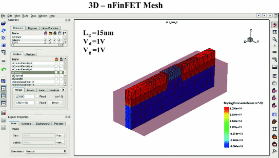
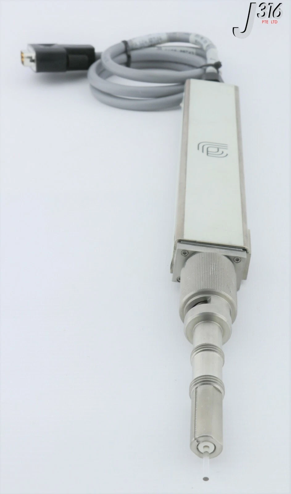

An in-depth look at semiconductor processing equipment.
I tried to include as many links as possible. Some links are quoted but put directly in here because I think it helps to put everything in one space without having to hop tabs over and over.
While I think this is well-researched and reasonably written, Gell-Mann amnesia is a potential side effect of reading this work. Please consult your personal semiconductor engineer if something sounds like bullshit.
I'm a semiconductor fab engineer working in both process and equipment engineering-related capacities at a you've-probably-heard-of-it company.
This information is current as of May 2025.
Construction Physics' How to Build a $20 Billion Semiconductor Fab is an excellent introduction into both the semiconductor manufacturing process and the physical building that houses the manufacturing operations, but chooses not to expand on a critical component: the equipment used to make the semiconductor chips. (To be clear, you should probably read that first before reading this.)
As Brian writes:
Early integrated circuits could be made with just ... dozens of process steps, but a modern leading-edge microchip might require ... thousands of separate process steps.
The equipment, also known as tools to those in the industry, is what performs these individual process steps. In the same way that a traditional machine shop has a mille, lathe, and bandsaw to perform a variety of operations on a single piece of metal to create a final product, a fab has deposition tools, etch tools, and lithography tools (among many, many others) to perform a variety of operations on a single silicon wafer to create the final chip.
So what does the equipment even look like? Some tools are quite boxy to help minimize the area used, or the footprint. Some tools are less boxy due to sheer requirements, i.e., the original equipment manufacturer (OEM) could only make it so small area-wise before it lost some functionality or performance.
Here's a picture of one of Applied Materials' (AMAT) tools, the Endura (note that while not perfectly box-like, it can still fit inside a nice rectangle):

And here's a picture of a Tokyo Electron Limited (TEL) furnace that can fit inside a very narrow space, allowing strategic use of often underutilized overhead space while minimizing its 2D footprint:

The rest of this piece will go over everything around tools: how they're selected, a detailed overview of all the parts of an example tool, and what tools generally share in common regardless of the process. There are even some fun little games to help visualize concepts.
There are a gazillion steps that happen before one actually uses a tool, especially if it's the first fab and there's nothing to match off of.
First, the chips designers craft the individual steps needed to go from a bare silicon wafer to the final product. These steps include low-level specifics like what materials they'll use, temperature/pressure/gas flow needed, etc. This is done in technology CAD (TCAD) software like Synopsys to minimize on-wafer experimentation and hit the ground running. (Note that sometimes the designers here don't care about the manufacturability of the process—they will simply do what is best for the device performance and leave the equipment and process engineers to figure out the rest at the detriment of their weekends and hairlines and sanity, leading them to gripe on the internet to strangers in run-on sentences.)

Jokes aside, there is some amount of direction from the head honchos on balancing out cost considerations with device performance depending on the size of the company's coffers, the (potential) demand of the product, and the raw expected value of the proposed flow. Does the flow really need that one step that requires a brand new one-of-a-kind (OAK) tool in the fab, or can they figure out another way to achieve the same results? Do they really need to use the oh-so-expensive, but incredibly reliable and proven, nitrous oxide (N2O) as a primary gas when growing gate oxides, or can they find a way to make an N2-O2 chemistry work, despite the literature saying it is worse in almost all ways? Do they really need all that helium to help cool the wafer faster, or can they make do with N2.
Now that the general process flow has been created, the grunts (equipment and process engineers) can start selecting the tools that fit the requirements. Plus, if they ask really nicely and their parents (read: management) let them, they may even be able to add some sweet, sweet goodies on from the boring base model to make the tool even better.
Thankfully free markets and anti-monopoly laws allow some leeway in choosing which tool is best, where best can mean a bunch of different things (in no particular order):
It may be better to find an equivalent platform that is much more common. I've heard of OEMs sunsetting support for certain tools because they want to force purchases of new equipment and there just isn't enough demand in the market to justify supporting it anymore. This can leave fabs in precarious situations, especially if the OEM isn't willing to release IP around the platform or provide contact details of former employees who could help, even if it won't hurt their bottom line.
Engineers work with OEMs to help design the tool to the customer's specifications. The customer may say I want X and don't want Y and the OEM may offer a catalog of attractive upgrades with data to support their efficacy. The engineer may also simply say "match this new guy to our current tool with serial number 123", which makes it much easier on everyone.
Once the design and final price are agreed upon, the customer purchases the tool.
Manufacturing locations of the tools vary. AMAT has manufacturing facilities in Austin and Singapore, TEL builds tools in Japan and ships them via ship to the U.S., ASML builds the modules in the Netherlands and ships them using "40 freight containers, three cargo planes and 20 trucks".
Factories will do their own factory acceptance testing (FAT) prior to shipping to ensure everything was manufactured correctly with no to minimal defects.
Shipping occurs by either land (freight truck), air (cargo plane), or sea (cargo ship).
The OEM includes installation labor and relevant parts in the price of the tool. OEM employees, often dedicated to installing equipment and very little else, will come in and follow step-by-step guides to ensure the installation is done correctly and completely.
The fab's electrical and gas teams will often prefabricate
We'll look at the Applied Materials Centura Gate Stack system, which consists of the following modules:
And just to be explicit, here's the complete path of a normal wafer through the tool with explanations of each step:
As the name implies, the factory interface (FI) connects the tool to the rest of the factory. Wafers in FOUPs get loaded in through the FI's loadports then transferred to the rest of the tool for processing. Centura FIs consist of the following parts:
FOUPs are dropped off onto the loadport by the AMHS and their doors removed in order for their wafers to be scanned by the tool in one of two ways:
Most factories' automations provide the tool with the number of wafers they are sending, allowing verification of the count itself. The tool alarms if there's a mismatch so a technician can investigate. Did one wafer fall on top of the other, making it seem like there was one less? Is there someone already on a plane back to North Korea to reverse engineer the chip? Did the robot miscount for some odd reason?
Once the FOUP and its wafers are successfully scanned, the next step involves the...
The FI robot is responsible for moving wafers to and from places in the FI or loadlocks (e.g., from loadport1 to loadlock1) There are multiple styles of FI robots (ordered by most to least modern):
Here's a video showing an FI robot picking up and placing to from multiple positions:
Robots have end effectors (in the form of a fork) that the wafer sits on when being transported. A plunger actuates forward by pneumatic (air) pressure to secure the wafer against the end of the blade to prevent movement while moving. The robot knows a wafer is present based on the plunger's position when activated: if the plunger is too far forward then there's no wafer and if it's too far back there could be a wafer, but it won't know until it plunges.
[image]Wafers have small notches on them to allow for more standardized processing, if desired. Some processes prefer all wafers have their notches aligned before being processed to ensure processing is as identical as possible.
The aligner will "chuck" the wafer (apply vacuum to the backside so it doesn't go flying off and shatter into a million pieces), scan the wafer, find the notch, then align based on the desired angle before the robot picks it up to transfer it elsewhere.
Fabs like like clean air. They also like laminar (straight from top to bottom) flow. Which means they also really like mini environments (ME) that are the FIs themselves.
The FI is a ME in and of itself. It's shielded from the main fab environment by doors and walls to prevent any contamination—be it particles, undesirable gases, etc—from entering. All entry points have seals that are enough to protect the ME's integrity so when wafers are being transferred around inside they aren't being (read: shouldn't be) subjected to potential harm of particles or unclean air.
A filter fan unit (FFU) installed on the top of the FI ensures that air flow is laminar and any particles are getting trapped inside the filter instead of on the wafer.
US 8,254,767 B2 Method and apparatus for extended temperature pyrometry offers a detailed overview of the Radiance chamber and its operation, just in patentese.
Here's a good overview of a 200 mm Radiance chamber on a Centura mainframe:
And here's the 300 mm version of the famous honeycomb structure:

Each of those holes—all 409 of them—house an individual lamp that shines light to heat the wafer. Notice that holes are perfectly symmetrical across the entire structure, allowing for concentric rings of lamp zones that can be individually controlled to maximize wafer temperature uniformity.
So let's say the lamps are on and the wafer is heating up, causing it to emit light from the backside. A handy instrument called a pyrometer is then used to measure the temperature of the wafer based on the light it's emitting. (I won't go into the science-y details about radiation and blackbodies.) From here it can use a controller to adjust the lamp's output accordingly: more voltage = brighter = hotter, or less voltage = dimmer = colder.

US 6,406,179 Sensor for measuring a substrate temperature describes the process of measuring a temperature given backside wafer radiation values.
[FINISH]A magnetically-levitated (maglev) rotor spins upwards of 200 rpm to ensure temperature uniformity across the wafer. A rotatable stator is outside of the main chamber body and spins using a motor; with the rotor magnetically coupled to the stator, it can spin quite fast!